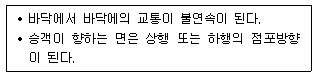
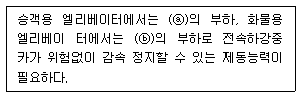
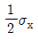
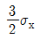
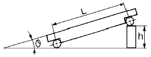
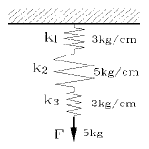
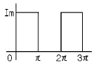

승강기산업기사 (2002-09-08 기출문제)
1과목: 승강기개론
1. 구배가 8도 이하인 수평보행기(트레블레이터)의 스탭 속도는 몇 m/min 이하인가?
- 30
- 40
- 50
- 60
(정답률: 39%)

2. 주차용 엘리베이터의 종류가 아닌 것은?
- 피즐파킹 엘리베이터
- 수직순환방식 엘리베이터
- 수평운반방식 엘리베이터
- 자립방식 엘리베이터
(정답률: 67%)
3. 에스컬레이터의 구조에 대한 설명으로 옳지 않은 것은?(관련 규정 개정전 문제로 여기서는 기존 정답인 1번을 누르면 정답 처리됩니다. 자세한 내용은 해설을 참고하세요.)
- 디딤판체인 및 구동체인의 안전율은 5 이다.
- 디딤판의 정격속도는 30m/min 이하이다.
- 디딤판의 정지거리는 0.1m 이상, 0.6m 이하이다.
- 에스컬레이터의 높이가 6m 이하일 때의 경사도는 35도까지 허용된다.
(정답률: 69%)
4. 완충기에 대한 설명이 옳은 것은?
- 완충기는 카 최상층을 통과하여 피트바닥으로 계속 하강할 때 충격을 완화하는 장치이다.
- 완충기의 유압식은 카의 충격 완화용에, 스프링식은 균형추의 충격 완화용에만 사용된다.
- 유압식은 정격속도 60m/min를 넘는 경우에 사용한다.
- 순간 최대감속도가 2.5g를 넘어 감속도가 1/25 초를 초과하여 계속 낙하하도록 한다.
(정답률: 75%)
5. 조속기의 작동 설명으로 틀린 것은?
- 1단계 작동은 정격속도의 1.3배 범위에서 과속스위치가 동작한다.
- 과속스위치 동작은 상승 및 하강 양 방향에서 작동한다.
- 2단계 작동은 1.4배 범위에서 조속기 로프를 전기적으로 잡아 비상정지장치를 작동한다.
- 2단계 작동시는 하강방향에서만 작동한다.
(정답률: 38%)
6. 도어 개폐장치에 대한 구비조건으로 틀린 것은?
- 카 상부에 설치하는 구조로 소형 경량일 것
- 작동이 원활하고 정숙할 것
- 먼지나 이물질이 끼이지 않도록 몰딩시킬 것
- 엘리베이터 기동회수에 비해 동작회수가 많으므로 보수가 용이하도록 할 것
(정답률: 63%)
7. 승강로의 구조에 대한 설명으로 옳은 것은?
- 승강로는 외부 공간과 격리되어서는 아니된다.
- 화재시에는 소방호스의 이동공간으로 이용이 가능 하여야 한다.
- 엘리베이터에 필요한 배관설비 이외의 설비는 하지 않도록 한다.
- 피트바닥 아래층의 이용 유무에 관계없이 균형추에는 항상 비상정지장치를 하도록 한다.
(정답률: 84%)
8. 견인비(Traction ratio)를 무부하와 전부하에서 체크하고 그 값을 낮게 선택하는 이유는?
- 로프 길이를 줄이기 위하여
- 로프의 손상과 전동기의 용량을 줄이기 위하여
- 로프 본수를 줄이고 마찰력을 증대하기 위하여
- 균형추의 무게를 줄이고 로프 본수를 줄이기 위하여
(정답률: 79%)
9. 기계실에 반드시 설치하지 않아도 되는 것은?
- 소화기
- 조명설비
- 환기설비
- 방음문
(정답률: 80%)
10. 엘리베이터 권상전동기의 제어에서 3상유도전동기의 입력 전압과 주파수를 동시에 제어(인버터 제어)하는 방식은?
- 교류2단속도제어방식
- 교류궤환제어방식
- VVVF제어방식
- 워드레오나드방식
(정답률: 72%)
11. 순간식 비상정지장치에 대한 설명으로 옳은 것은?
- 제동거리는 제동 즉시 카를 정지시키므로 고려하지 않는다.
- 60m/min정격속도의 승용 엘리베이터에 적용한다.
- 순차식 비상정지장치라고도 한다.
- 효율이 좋으므로 승용 엘리베이터에 주로 사용한다.
(정답률: 67%)
12. 에스컬레이터의 스커트 가드와 디딤판과의 틈새는 몇 mm 범위 이내 이어야 하는가?
- 2∼5
- 5∼7
- 7∼9
- 10∼13
(정답률: 59%)
13. 교류 2단속도 승강기의 속도제어 순서는?
- 저속 출발 - 고속 운전 - 저속 전환 - 정지
- 고속 출발 - 고속 운전 - 저속 전환 - 정지
- 저속 출발 - 고속 운전 - 정지
- 고속 출발 - 고속 운전 - 정지
(정답률: 81%)
14. 승객용 엘리베이터에서 로프를 2:1로 걸었을 때 카의 속도와 균형추의 속도에 대한 설명으로 옳은 것은?
- 카와 균형추의 속도가 같다.
- 카가 균형추보다 빠르다.
- 균형추가 카보다 빠르다.
- 하강할 때는 균형추가 상승할 때는 카가 빠르다.
(정답률: 67%)
15. 정전시에 대비한 비상전원장치의 설명으로 적합하지 않은 것은?
- 카내 비상등 전원으로 사용한다.
- 비상통화장치의 전원으로 사용한다.
- 비상운전 중 램프전원으로 사용한다.
- 정전시 비상전원으로 자동 전환된다.
(정답률: 48%)
16. 로프의 꼬임형태 중 일반적으로 아파트 등에 많이 사용하는 것은?
- 보통 Z 꼬임
- 보통 S 꼬임
- 랭그 Z 꼬임
- 랭그 S 꼬임
(정답률: 62%)
17. 피트바닥 하부를 통로 등으로 사용할 경우의 조건으로 옳은 것은?
- 피트바닥을 견고한 목재로하여 흔들림이 없도록 고정시킨다.
- 균형추쪽에 완충기를 설치하여 비상정지에 대비 하도록 한다.
- 피트바닥을 2중 슬라브로 하고, 균형추쪽에 비상정지 장치를 설치한다.
- 균형추쪽 직하부에 두꺼운 벽을 설치하고, 비상정지장치를 설치한다.
(정답률: 66%)
18. 엘리베이터의 홀랜턴 및 위치표시기에 대한 설명 중 틀린것은?
- 대부분의 군관리방식에서는 승장의 위치표시기를 전층 설치하여 승객의 편의를 도모한다.
- 홀랜턴은 군관리방식에서 선택호기를 표시하는 장치로 즉시 예보방식과 도착 예보방식이 있다.
- 군관리방식에서 대기하는 승객의 혼란을 막기위하여 위치표시기를 달지 않는 경우가 대부분이다.
- 장애인용 엘리베이터에는 위치표시기와 함께 카내에 서 정지층을 안내하는 음성안내장치가 있어야 한다.
(정답률: 47%)
19. 유압식 엘리베이터에서 체인은 최소 몇 가닥이상 이어야 하는가?
- 1
- 2
- 3
- 4
(정답률: 58%)
20. 유압 엘리베이터의 특징이 아닌 것은?
- 승강로 상부에 기계실을 설치하지 않아도 된다.
- 운행과 속도에 한계가 있다.
- 상부 틈이 작아도 된다.
- 기계실 위치가 자유롭지 않다.
(정답률: 75%)
2과목: 승강기설계
21. 카 자중 1200kg, 정격하중 1000kg인 엘리베이터의 오버밸런스율을 40%로 취하면 균형추의 중량은 몇 kg 인가?
- 1480
- 1600
- 1720
- 1800
(정답률: 75%)
22. 전동식 엘리베이터의 카 프레임과 플렛홈(PLATFORM) 및 부재에 관한 설명으로 옳은 것은?
- 카 상부체대(CROSS HEAD)의 응력은 카가 최하층에서 휴지 중일 때 카자중과 정격하중을 지지하는 총하중을 기준으로 한다.
- 카의 프레임과 플렛홈 부재의 최대허용변형은 동하중을 기준으로 정해진 값보다 크지 않아야 한다.
- 상부체대, 하부틀(PLANK), 플렛홈 프레임의 부재에 있어서의 최대허용변형은 전장의 1/960을 초과하지 않아야 한다.
- 화물용 엘리베이터의 플렛홈 부재에 대한 응력계산은 B급하중인 경우 정격하중의 1/4(25%)이 프레임 부재의 중앙에 집중되는 것으로 간주한다.
(정답률: 44%)
23. 가이드 레일의 규격은 무엇으로 정하는가?
- 인장강도
- 굽힘모멘트
- 단위길이
- 단위길이당 중량
(정답률: 75%)
24. 감시반을 설치하는 가장 큰 목적은?
- 승객의 안전 및 신속한 구출
- 신속한 보수
- 교통량 분석
- 효율적 운용
(정답률: 68%)
25. 카 자중이 1700kg, 정격적재하중이 1200kg, 승강행정이 60m이고, 주로프로는 12mm 5가닥을 사용하며, 오버밸런스율은 43%, 주로프의 중량이 0.5kg/m인 엘리베이터의 트랙션비는 약 얼마인가?
- 전부하: 1.35, 무부하: 1.33
- 전부하: 1.33, 무부하: 1.35
- 전부하: 1.39, 무부하: 1.38
- 전부하: 1.38, 무부하: 1.39
(정답률: 52%)
26. 승객용 및 화물용 엘리베이터의 카 내장(판넬, 천장, 조작반 등) 및 도어에 대한 설명으로 틀린 것은?
- 구출구의 열림은 0.25m2 이상의 면적을 가져야 하고 어느 변의 길이도 406mm이상으로 하여야 한다.
- 카 판넬은 34kgf의 힘을 받을 때 변형이 25mm를 초과 하지 않도록 한다.
- 카 도어 및 가이드 슈, 레일 및 행거는 완전히 닫힌 도어의 중앙부근에 직각으로 사방 3⑤mm의 면적에 34kgf의 힘을 가할 때 카 실의 선을 넘는 편형을 일으키지 않도록 한다.
- 승객용 및 인화공용에는 2개 이상의 출입구를 설치할 수 없다.
(정답률: 73%)
27. 엘리베이터의 가이드 레일의 강도를 계산할 때 고려하지 않아도 되는 사항은?
- 레일의 단면계수
- 레일 단면의 조도
- 카나 균형추의 총중량
- 레일 브라켓의 설치 간격
(정답률: 70%)
28. 백화점 건물에 에스컬레이터를 배열시킬 때 다음과 같은 결점이 예상되는 것은?

- 복렬승계형
- 교차승계형
- 단열승계형
- 단열겹침형
(정답률: 29%)
29. 엘리베이터의 동력전원설비를 설계할 때 가속전류는 전부하 상승전류의 몇 배로 하는 것이 가장 적합한가?
- 1.2∼1.4배
- 1.3∼1.5배
- 1.5∼1.7배
- 1.7∼1.9배
(정답률: 41%)
30. 권상용 와이어 로프를 승강기에 적용 시킬 때 적합하지 않은 것은?
- 직경은 공칭지름 8mm 이상으로 사용할 것
- 단부는 1본마다 강제 소켓트에 바비트 채움 또는 클램프 고정으로 할 것
- 승강기용 로프는 승강기용으로 제작된 것을 사용 할 것
- 카 1대에 대해 3본이상 일 것
(정답률: 45%)
31. P-6-CO로 표시되는 엘리베이터의 숫자 "6"의 의미는?
- 로프 수
- 정지층 수
- 정원
- 승강로 레일 본수
(정답률: 50%)
32. 인승용 엘리베이터에서 설계용 수평 진도(KH)가 0.4, 카 중량이 1500㎏일 때 가이드 레일에 작용하는 지진하중 Px는 몇 kg 인가? (단, 상하 가이드슈의 하중비는 0.6으로 한다.)
- 280
- 360
- 2250
- 6250
(정답률: 52%)
33. 유도전동기에 인가되는 전압과 주파수로 속도를 제어하는 방식은?
- 교류 1단 속도제어
- 교류 2단 속도제어
- VVVF제어
- 직류제어
(정답률: 60%)
34. 에스컬레이터의 디딤판이 들려지는 상태에서의 운행이탈을 감지하는 스탭주행 안전스위치의 설치장소는?
- 상부, 좌측 및 우측에 설치
- 상부, 하부, 좌측 및 우측에 설치
- 하부 및 우측에 설치
- 하부, 좌측 및 우측에 설치
(정답률: 79%)
35. 엘리베이터의 교통량을 계산하는 주목적으로 옳은 것은?
- 여유가 있는 엘리베이터를 설치하기 위하여
- 최소 비용으로 최적의 엘리베이터를 설치하기 위하여
- 엘리베이터 설계의 방향을 설정하기 위하여
- 승객의 수송시간을 계산하기 위하여
(정답률: 68%)
36. 스프링완충기의 설계시 고려하지 않아도 되는 것은?
- 정격하중
- 정격속도
- 카자중
- 엘리베이터의 용도
(정답률: 83%)
37. 로프식 승강기용 전동기의 특징이다. 잘못된 것은?
- 기동토크가 커야 한다.
- 회전부분의 관성 모멘트가 커야 한다.
- 기동전류가 작아야 한다.
- 온도 상승에 충분히 견디어야 한다.
(정답률: 58%)
38. 다음은 브레이크에 대한 설명이다. ( )안에 알맞은 것은?

- ⓐ 120％, ⓑ 125％
- ⓐ 125％, ⓑ 120％
- ⓐ 125％, ⓑ 135％
- ⓐ 135％, ⓑ 125％
(정답률: 63%)
39. 도어 인터록에 대한 설명으로 옳지 않은 것은?
- 전용 키로만 도어를 열어야 한다.
- 도어록과 도어스위치로 구성되어 있다.
- 승장 도어의 열림을 방지하는 장치이다.
- 승장 도어의 닫힘상태를 인지하여 권상기에 1차적으로 신호를 보낸다.
(정답률: 66%)
40. 하중값이 시간적으로 변화하는 상황에 따른 분류에 속하지 않는 것은?
- 교번하중
- 반복하중
- 분포하중
- 충격하중
(정답률: 56%)
3과목: 일반기계공학
41. σx가 인장하고, σy가 압축하며 |σy|=|2σx|의 관계를 가지고 있을 때, 최대 전단응력의 값은?


- σx
- 2σx
(정답률: 34%)
42. 소요동력 30 KW, 펌프효율 80 %, 전양정 30 m로 해서 양수한다면 송출유량(m3/sec)은?
- 0.0816
- 4.896
- 0.102
- 816
(정답률: 38%)
43. 선반 작업시 지름 60mm의 환봉을 절삭하는데 적합한 회전수는 몇 rpm 인가? (단, 절삭속도는 50m/min이다.)
- 250
- 255
- 260
- 265
(정답률: 47%)
44. 열응력에 대한 설명 중 틀린 것은?
- 온도차에 비례한다
- 세로 탄성계수의 크기에 비례한다
- 선팽창 계수의 크기에 비례한다
- 재료의 크기의 단면적에 반비례한다
(정답률: 48%)
45. 탄소의 함유량이 6.67%인 탄화철은 다음 중 어느 것인가?
- 시멘타이트
- 페라이트
- 오스테나이트
- 펄라이트
(정답률: 63%)
46. 냉간 가공의 특징이 아닌 것은?
- 가공면이 매끄럽고 곱다.
- 가공도가 크다.
- 연신율이 작아진다.
- 제품의 치수가 정확하다.
(정답률: 49%)
47. 두랄루민은 알루미늄에 무엇을 첨가한 합금인가?
- 동 및 마그네슘과 크롬
- 동 및 마그네슘과 망간
- 주석 및 마그네슘과 철
- 주석 및 알루미늄과 아연
(정답률: 63%)
48. 두께가 일정하며 테이퍼가 있는 일종의 쐐기로서 축과 축을 결합하는 경우와 축방향으로 작용하는 압축력이나 인장력에 대해서 풀리지 않도록 부품을 결합할 때 사용하는 기계요소는?
- 코터
- 핀
- 스플라인
- 와셔
(정답률: 65%)
49. 회전축의 전달마력이 7PS 인 축에 350rpm으로 작동한다면 축의 전달 토크는 약 몇 kgf-cm 인가?
- 1520
- 1590
- 1432
- 1948
(정답률: 37%)
50. 다음 중 유압의 기초적인 원리라 할 수 있는 파스칼의 원리에 대한 설명이 아닌 것은?
- 유체의 압력은 면에 직각으로 작용한다.
- 각 점에서의 압력은 모든 방향으로 같다.
- 가한 압력은 유체 각부에 같은 세기로 전달된다.
- 유체의 압력은 압력을 직접 받는 면이 가장 크다.
(정답률: 64%)
51. 평벨트 전동에 비하여 V벨트 전동의 특징으로 잘못된 것은 무엇인가?
- 속도비를 크게 할 수 있다.
- 긴 거리의 벨트전동이 가능하다.
- 미끄럼이 아주 적고 능률이 높다.
- 이음매 없이 고리 모양으로 만들어졌기 때문에 끊어 졌을때 접합이 불가능하다.
(정답률: 59%)
52. L = 50mm의 사인바(sine bar)에 의하여 경사각 θ =20°를 만드는 데 필요한 게이지블록의 높이차(h)는 약 몇 mm로 조합하여야 하는가?

- 16.40
- 17.10
- 18.20
- 19.30
(정답률: 55%)
53. 드릴 등으로 뚫어진 구멍의 내면을 다듬질하거나 확장하는데 사용되는 공구는?
- 탭
- 다이스
- 리머
- 스크레이퍼
(정답률: 50%)
54. 다음 그림과 같이 스프링 상수가 서로 다른 3개의 스프링이 직렬로 연결되어 힘 F에 5kgf의 하중이 걸려있다면 총 늘어난 길이는? (단, 3개의 스프링 상수는 각각 k1 : 3kgf/cm, k2 :5kgf/cm, k3 : 2kgf/cm이다.)

- 2.17 cm
- 3.17 cm
- 4.17 cm
- 5.17 cm
(정답률: 50%)
55. 목형의 종류에서 현형에 속하는 것이 아닌 것은?
- 단체형(one piece pattern)
- 분할형(split pattern)
- 조립(built up pattern)
- 회전형(sweeping pattern)
(정답률: 57%)
56. 다음 중 밀링작업에서 상향 절삭의 특징으로 맞는 것은?
- 백래시 제거 장치가 필요하다.
- 커터 수명이 짧다.
- 동력 소비가 작다.
- 가공면이 깨끗하다.
(정답률: 40%)
57. 안지름이 1 m인 압력용기에 5 kg/cm2 의 내압이 작용하고 있다. 압력용기의 뚜껑을 18 개의 볼트로 체결할 경우 볼트의 지름은 약 얼마인가? (단, 볼트 지름방향의 허용인 장응력을 1000 kg/cm2이고, 볼트에는 인장하중만 작용한다.)
- 16.7(mm)(M18)
- 21.7(mm)(M22)
- 26.7(mm)(M27)
- 31.7(mm)(M33)
(정답률: 61%)
58. 다음 중 나사산이 3각형으로 된 것이 아닌 것은?
- 미터나사
- 휘트워드나사
- 유니파이나사
- 애크미나사
(정답률: 68%)
59. 분사펌프에서 유체의 조합이 아닌 것은?
- 액체 분류로서 액체를 수송하는 것
- 액체 분류로서 기체를 수송하는 것
- 증기 분류로서 액체를 수송하는 것
- 증기 분류로서 고체를 수송하는 것
(정답률: 65%)
60. 황동에는 7:3 황동과 6:4 황동이 있다. 황동의 주성분으로 가장 적당한 것은?
- 구리(Cu) + 망간(Mn)
- 구리(Cu) + 아연(Zn)
- 구리(Cu) + 니켈(Ni)
- 구리(Cu) + 규소(Si)
(정답률: 58%)
4과목: 전기제어공학
61. VVVF제어방식의 특성으로 옳지 않은 것은?
- 전동기의 발열량이 적다.
- 전원설비용량이 크게 된다.
- 1차전압제어방식에 비하여 역률을 크게 할 수 있다.
- 1차전압제어방식에 비하여 소비전력을 줄일 수 있다.
(정답률: 49%)
62. 논리식 A(A+B)를 간단히 하면?
- A
- B
- AB
- A+B
(정답률: 52%)
63. 부궤환(negative feedback) 증폭기의 장점은?
- 안정도 증가
- 증폭도 증가
- 전력의 절약
- 능률의 증대
(정답률: 60%)
64. 유도전동기의 1차 접속을 △에서 Y로 바꾸면 기동시의 1차전류는 어떻게 변화하는가?
- 1/3로 감소 나.
- 1/√3로 감소
- 3 배로 증가
- 3배로 증가
(정답률: 60%)
65. 50Ω의 저항 4개를 이용하여 가장 큰 합성저항을 얻으면 몇 Ω 인가?
- 75
- 150
- 200
- 400
(정답률: 88%)
66. 자동제어계에서 각 요소를 블럭선도로 표시할 때 각 요소는 전달함수로 표시한다. 신호의 전달경로는 무엇으로 표현하는가?
- 접점
- 점선
- 화살표
- 스위치
(정답률: 64%)
67. 전선의 저항을 측정하는데 가장 적당한 것은?
- 휘이트스토운브리지법
- 캘빈더블브리지법
- 코올라우시브지지법
- 맥스웰브리지법
(정답률: 49%)
68. 그림과 같은 파형의 평균값은?

- 2Im
- Im
- Im/2
- Im/4
(정답률: 67%)
69. 저항 100Ω의 전열기에 4A의 전류를 흘렸을 때 전력은 몇 W 인가?
- 250
- 400
- 1600
- 3600
(정답률: 60%)
70. 폐루프 제어계에서 전동기의 회전속도는 궤환요소로서전동기 축에 커플링을 통해서 결합되는 타코제너레이터(T.G)와 같은 어떤 요소로서 측정이 되는가?
- 포텐쇼 미터
- 응력 게이지
- 로드 셀
- 서보 센서
(정답률: 52%)
71. 시퀸스제어에 관한 설명 중 옳지 않은 것은?
- 조합논리회로도 사용된다.
- 계통에 연결된 모든 스위치가 동시에 동작할 수도 있다.
- 시간 지연요소도 사용된다.
- 제어 결과에 따라 조작이 자동적으로 이행된다.
(정답률: 75%)
72. 동작신호를 조작량으로 변환하는 요소로서 조절부와 조작부로 이루어진 요소는?
- 기준입력 요소
- 동작신호 요소
- 제어 요소
- 피드백 요소
(정답률: 52%)
73. 피드백제어에 대한 설명으로 옳은 것은?
- 이 제어회로는 개회로로 구성되어 있다.
- 입력과 출력을 비교하는 장치가 없는 것이 단점이다.
- 대역폭이 감소한다.
- 오차를 자동적으로 정정하게 하는 제어방식이다.
(정답률: 63%)
74. 제어부의 제어 동작 중 연속동작이 아닌 것은?
- P동작
- ON-OFF동작
- PI동작
- PID동작
(정답률: 58%)
75. 직류기에서 전기자반작용의 영향을 줄이기 위한 방법 중 효과가 가장 큰 것은?
- 보극
- 보상권선
- 균압고리
- 전자식 브러시
(정답률: 33%)
76. 농형유도전동기의 기동법이 아닌 것은?
- 리액터기동법
- Y-Y기동법
- 전전압기동법
- 기동보상기법
(정답률: 73%)
77. 어떤 제어계의 전달함수의 극점이 S1= -1+j, S2= -1-j일 때 이 계의 고유주파수 ωn과 감쇠율 δ는?
- ωn=2, δ=1/√2
- ωn=√2, δ=1/√3
- ωn=2, δ=√2
- ωn=√2, δ=√2
(정답률: 49%)
78. R-L-C 병렬회로가 병렬공진 되었을 때 합성 임피던스의 크기와 합성전류의 크기는?
- 임피던스는 최대, 전류는 최소가 된다.
- 임피던스는 최소, 전류는 최대가 된다.
- 임피던스와 전류 모두 최대가 된다.
- 임피던스와 전류 모두 최소가 된다.
(정답률: 60%)
79. 직류전동기의 회전수를 일정하게 유지시키기 위하여 전압 제어를 하고 있다. 전압의 크기는 어느 것에 해당하는가?
- 목표값
- 조작량
- 제어량
- 제어대상
(정답률: 24%)
80. 저항의 종류 중 가능한 큰 것이 좋은 것은?
- 접지저항
- 도체저항
- 절연저항
- 접촉저항
(정답률: 66%)